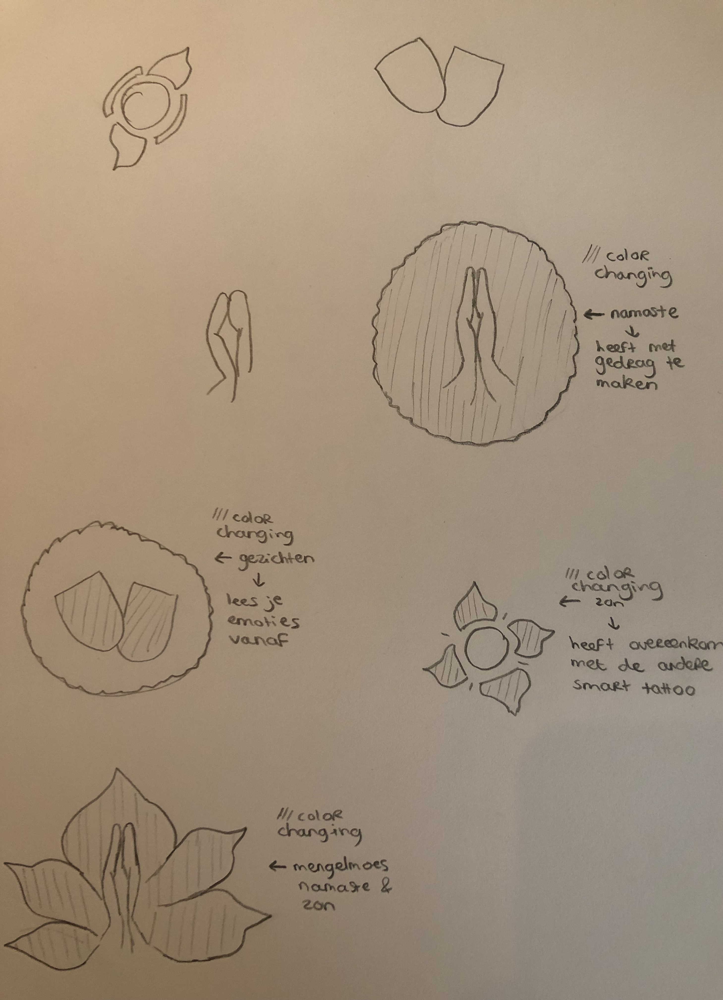

ASSIGNMENT
Social Smart
Smart tattoos hebben een interactieve functie. Ik heb een concept bedacht waarbij smart tattoos de sociale interactie stimuleren. Sociale interactie bevat de manier waarop mensen met elkaar interacteren, reageren op elkaar en elkaar beïnvloeden.
Het concept dat ik bedacht heb, bevat het aflezen van elkaars gevoelens door middel van smart tattoos. De tattoos veranderen van kleur aan de hand van je emotie. De kleuren van de tattoos bij de emoties zijn als volgt:
Boos: Rood
Angstig: Oranje
Verdrietig: Blauw
Rustig: Groen
Blij: Geel
Ongedefinieerd: Wit
Ik heb “ongedefinieerd” opgenomen, omdat het systeem ook weleens niet kan begrijpen hoe een persoon zich voelt. Om te voorkomen dat er een verkeerde emotie wordt getoond, heb ik dit begrip opgenomen.
Deze tattoo kan men helpen in de sociale interactie. Men kan namelijk op elkaars gevoelens inspelen aangezien die worden getoond. Hierdoor kan men een houding aan nemen die beter past bij de situatie. Je kan vanaf een paar meter afstand goed zien wat de emotie van een bepaald persoon is. De tattoo is niet heel groot, maar de kleur is wel duidelijk te zien. Men kan dus vanaf een bepaalde afstand al aflezen hoe men zich voelt.
Dit kan gerealiseerd worden door middel van het combineren van biosensoren met inkt. Biosensoren kunnen onder andere hartslag, ademfrequentie en huidtemperatuur meten. Mijn concept maakt gebruik van het meten van de hartslag. De tattoo zal ongeveer 4cm bij 4cm zijn. De tattoo komt op de pols aangezien daar de hartslag goed te voelen is. De biosensor meet dan wat de hoeveelheid bloed is die door het lichaam wordt gepompt Aan de hand daarvan kan de hartslag worden gemeten. Doordat de biosensoren de kleur van de tattoo kunnen laten veranderen, kan de gebruiker bij zichzelf en anderen (als zij ook zo een tattoo hebben) wat hun emotie is.
De laatste tekening is het uiteindelijke ontwerp geworden. De keuze voor dat ontwerp is dat dit ontwerp het beste aansluit met andere smart tattoos die al zijn gemaakt en de gezichten erin, accentueren dat het gaat om emoties.


RESEARCH
Over het onderwerp wearables zijn enorm veel projecten te vinden. Ik heb een project gezien waarin een NFC-tags in de nagels zit opgenomen. Dit vond ik enorm interessant, omdat het iets kleins is wat op een redelijk aparte plek zit. NFC staat voor Near Field Communication. Het is mogelijk om NFC-tags in de nagels op te nemen, omdat het heel klein is en omdat ze door magnetische velden in de buurt worden gevoed en niet op batterijen werken. Deze tags worden samen met acryl nagels op de natuurlijke nagels aangebracht. Het is natuurlijk een probleem als deze tags in aanraking met water komen. De handen moeten toch gewassen kunnen worden en je moet ook kunnen douchen. Door over de tags heen te schilderen, kan de chip tegen water tegen worden gehouden alleen dan zijn de nagels hobbelig. Je kan ook eerst je NFC-tags op je oorspronkelijke nagels bevestigen. Dit doe je met een nagelsticker waarop de NFC-tags zitten. Daarna kun je je kunstnagel eroverheen plaatsen en dan je nagel “verven”. Dit werkt ook waterafstotend. Als de nagelstickers op je nagels zitten, kun je de nagelsticker programmeren door middel van de apps “NFC Tools” of “NFC Taken”.
Ik vind dit een enorm interessante wearable. In de Near Field Communication chips kan enorm veel informatie opgeslagen worden. Je kan met bovenstaand voorbeeld bijvoorbeeld met je nagels betalen. Dit vind ik zelf bizar. Om je gegevens goed te beschermen, zou je een vingerhoedje moeten dragen. Ik vind dit persoonlijk best eng. Er kunnen op deze manier best makkelijk gegevens van jou worden gezien of gebruikt door anderen die zich dicht bij jou bevinden.
Een andere wearable die erg mijn aandacht trok was een lichtgevende rok. Ik vind het persoonlijk bizar dat je met een lichtgevende rok in de rondte zou willen lopen. Deze rok begint met licht geven wanneer je beweegt. Er zitten 12 kleur veranderende neopixels op geïnstalleerd en een versnellingsmeter om de beweging in kaart te brengen. Er zitten een soort tandjes in de sensoraflezingen en die zorgen ervoor dat de pixels in de rok knipperen en fonkelen. De pixels zijn aan de voering van de rok genaaid en worden door de buitenste laag van de stof verspreid.
Ik vind deze onderwerpen zo interessant, omdat het dingen zijn die je in het dagelijks leven naar mijn weten nog weinig tot niet ziet. Het project met de nagels vind ik persoonlijk zelfs een beetje eng. Mij lijkt het niets om bijvoorbeeld met mijn nagels te betalen. Ik vind dit te ver weg staan van het menselijke. Daarom trok dit project mijn aandacht. Het tweede project vind ik ook best bizar, maar dan omdat het mij niets lijkt om met een lichtgevende rok te lopen.
REFLECTION
Dit is een onderwerp waarvan in de huidige maatschappij al steeds meer sprake van is. Er worden steeds meer horloges ontworpen waarmee men de hartslag, bloeddruk, et cetera kan meten. Ik vind het erg interessant hoe dit mogelijk is.
Veel mensen uit de maatschappij maken al gebruik van wearables. Ik zie dat veel mensen dit gebruiken om hun bloeddruk of hartslag te meten, maar ook om een afgelegde afstand te meten. Dit laatste doen veel hardlopers. Ik maak zelf nog geen gebruik van een wearable. Dit komt vooral omdat ik het duur vind. Ik denk wel dat de toekomst een goed vooruitzicht voor wearables biedt en dat ik dan zeker ook een consument van een wearable zal worden. De zorg zal naar mijn mening ook meer gebruik gaan maken van wearables. Hiermee kunnen dan namelijk makkelijk gegevens gespecificeerd en achterhaald worden.
Het onderwerp voldeed aan mijn verwachtingen. Mij was namelijk duidelijk wat het begrip “wearables” betekende. Ook wist ik vooraf wat smart tattoos zijn. Hierdoor snapte ik het onderwerp goed en klopte mijn verwachtingen.
Het meest waardevolle aan dit onderwerp vind ik dat gemakkelijk persoonlijke gegevens van de mens gemeten kunnen worden. Dit kan naar mijn idee enorm helpend werken voor sommigen mensen. Vooral voor mensen die ziek zijn. Ook voor mensen die bijvoorbeeld tijdens het hardlopen willen meten wat hun hartslag doet, kan dit helpend werken. Zij kunnen dit gebruiken in hun verdere hardlooptraining.
BRONNEN
Gebruikt voor Assignment
Betekenis Sociale interactie. (z.d.).
Geraadpleegd op 2 mei 2019, van http://www.betekenis-definitie.nl/Sociale%20interactie
McGlaun, S. (2017, 2 oktober). Researchers develop smart tattoos that use color changing ink for medical info.
Geraadpleegd op 2 mei 2019, van https://www.slashgear.com/researchers-develop-smart-tattoos-that-use-color-changing-ink-for-medical-info-02502362/
Monitor your health with a colour-changing tattoo - MaterialDistrict. (2018, 23 januari)
Geraadpleegd op 2 mei 2019, van https://materialdistrict.com/article/monitor-health-colour-changing-tattoo/
Smart tattoos geen revolutie bij meten van lichaamsfuncties. (2017, 5 oktober).
Geraadpleegd op 2 mei 2019, van https://www.zorgictzorgen.nl/smart-tattoos-geen-revolutie-meten-lichaamsfuncties/
Sanders, M. (2006, december). De effecten van gevoelens op hart en hersenen.
Geraadpleegd van https://www.heartmathbenelux.com/doc/Margreet_Sanders_afstudeerscriptie_deeffectenvangevoelensophartenhersenen.pdf
Jongejan, W. J. (2017, 5 oktober). Smart tattoos geen revolutie bij meten van lichaamsfuncties.
Geraadpleegd op 2 mei 2019, van https://www.zorgictzorgen.nl/smart-tattoos-geen-revolutie-meten-lichaamsfuncties/
Tweakers. (z.d.). Geraadpleegd op 2 mei 2019, van https://tweakers.net/nieuws/108421/lg-ontwikkelt-dunne-biosensor-voor-wearables.html
McGlaun, S. (2017, 2 oktober). Researchers develop smart tattoos that use color changing ink for medical info.
Geraadpleegd op 2 mei 2019, van https://www.slashgear.com/researchers-develop-smart-tattoos-that-use-color-changing-ink-for-medical-info-02502362/
Gebruikt voor Research
Fish, T. (2018, May 3). Near-Field Fingernails.
Geraadpleegd op 12 mei 2019, van https://makezine.com/projects/near-field-fingernails/
Stern, B., & Cooper, T. (2015, December 7). Sparkle Skirt Using Adafruit Flora.
Geraadpleegd op 12 mei 2019, van https://makezine.com/projects/sparkle-skirt-using-adafruit-flora/